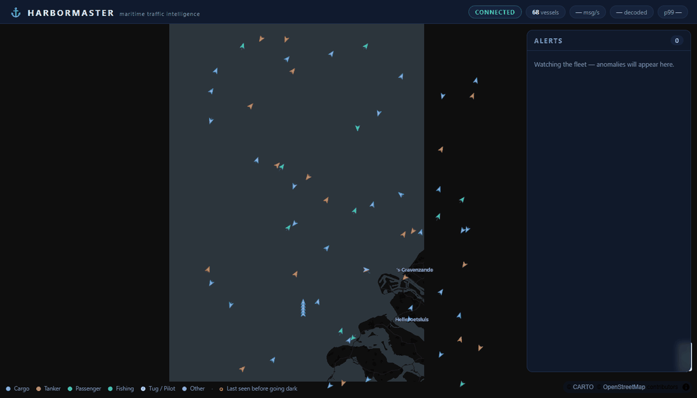

Selected work

⚓ Harbormaster
Real-time maritime traffic intelligence from raw AIS radio sentences. A from-scratch NMEA/ITU-R M.1371 decoder (no AIS library — that's the point), a vessel lifecycle state machine, and streaming detection of the evasion patterns used by sanctioned ships: dark gaps, GNSS spoofing, mid-sea rendezvous, loitering.
Event-driven Java 21 / Spring Boot 3 pipeline into a React + deck.gl tactical map over WebSocket, with an MCP server so AI agents can query the picture. Full CI, Docker, one-command demo.
📡 AsterixSim — radar traffic simulator
A full-stack simulator generating configurable EUROCONTROL ASTERIX radar traffic (Cat-10/11/34/48/62) over UDP multicast — realistic surveillance streams without live radars.
Built solo (React/TypeScript + Node.js + Java encoder), then adopted across teams for integration testing, demos and onboarding.
🤖 AI-augmented engineering, for real
Built an ML-based PR Risk Scorer (Python/FastAPI, 8-factor model) wired into GitLab CI, and an AI-assisted onboarding platform — custom MCP servers and Copilot Agent workflows across 100+ service repositories.
Cut new-developer ramp-up from weeks to hours. Daily practitioner: agents for code, architecture exploration and docs are how I work, not a demo.
Experience
Senior Software Engineer
- Protocol ingestion: designed 4 adapters (ASTERIX radar, AIS maritime, two C2 links) — bit-level binary parsing, TCP/UDP/multicast/serial transports, resilience and strict schema validation.
- Message distribution engine: central ZeroMQ pub/sub router — recipient filtering, multi-site fan-out, 10+ downstream consumers at low latency with zero event loss.
- Sensor orchestration: automatic sensor-to-target allocation, 500 ms tracking control loop, lifecycle state machines for EO cameras, radars, ESM and sonar.
- Platform: Docker/Helm/Kubernetes deployment, Jenkins shared-library CI/CD, led the platform-wide Java 8→21 migration.
Software Development Engineer
- C++ development on Creo View's MCAD/ECAD 3D visualisation engine; led the multi-format "External Cross Selection" feature; extended the Creo Schematics Java API. Later: ad-tech web features (Java/JS/SQL).
Software Developer · B.Sc. Computer Science
- Bank Leumi IVR call-centre system (Java/JS) while completing a CS degree at Tel Aviv University.
Toolbox
Let's talk.
I'm interviewing for senior backend / distributed-systems roles across the EU. If your team moves serious data in real time, I'd love to hear about it.